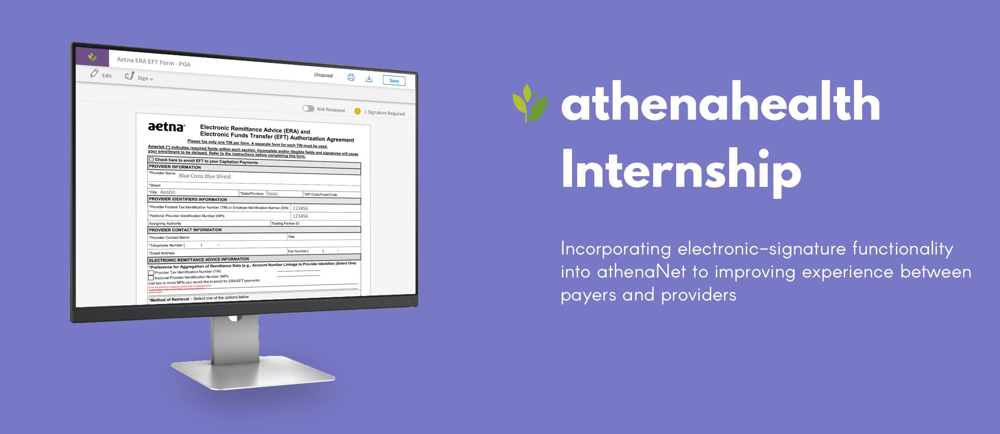
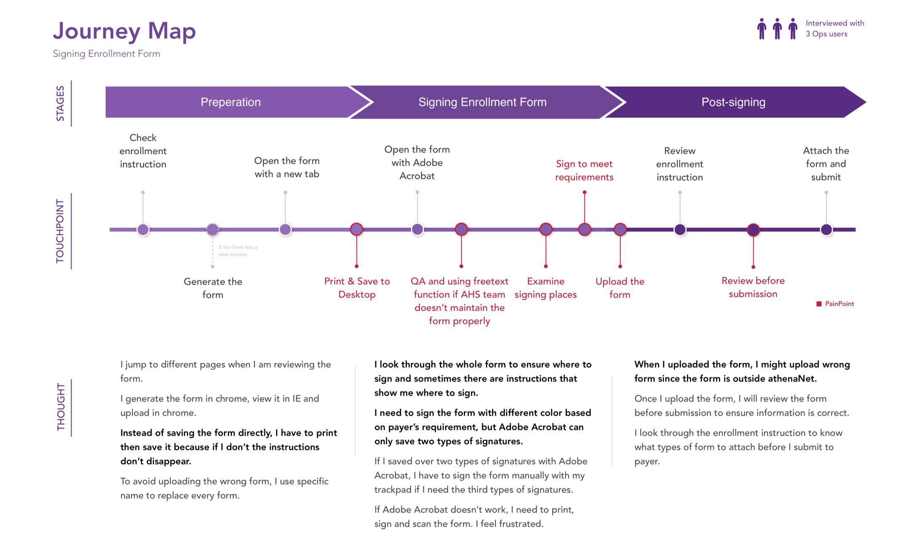
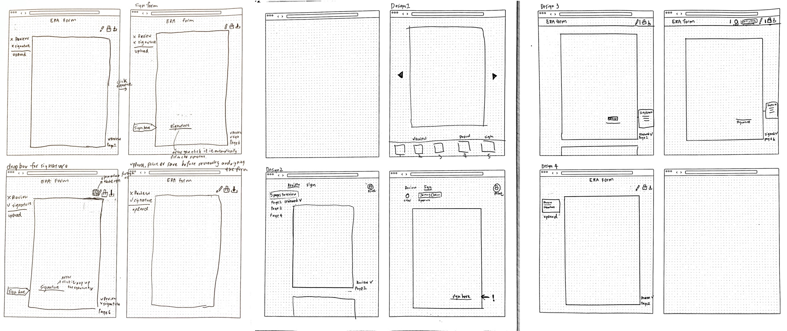
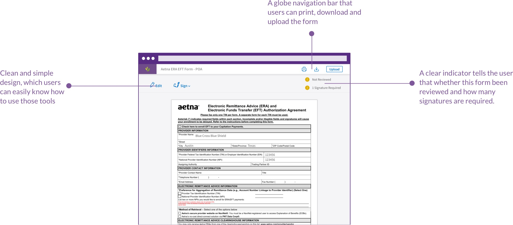
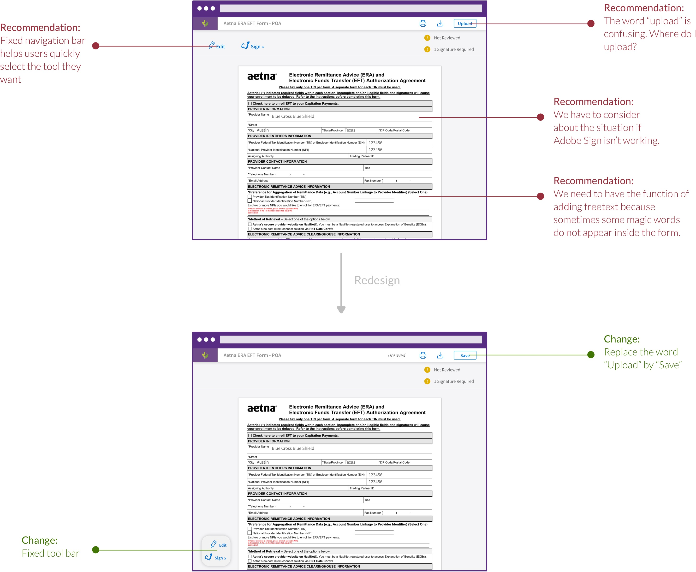

06/13/2018 - 08/17/2018
Experience Design Intern
Jeremy Chen (UX), Olivia Liu (PM), Mehdi (Dev), Francys (Dev), Maria (Dev)
Domain Research, User Interview, Journey Mapping, Ideation, Prototyping, Design Review, Concept Testing, Usability Testing
InVision, Sketch, iMovie, SurveyMonkey
athenahealth
In 2018 Summer, I worked for athenahealth as an Experience Design Intern and participanted in electronic-signature functionality scrum team. I am so excited to unbreak the healthcare! Currently, athenahealth’s enrollment Ops team and clients are forced to work outside of athenaNet, an athenahealth's Suite Of Cloud-Based Services for Health Care Providers, to sign payer application forms(e.g. EFT, ERA). On average, this signing process consumes 190.94 hours over a 90-day period for the Ops team and about 6 days for clients.
How might we incorporate electronic-signature functionality into athenaNet to improve the enrollment application form workflows? By considering about user needs, electronic-signature functionality might be a suitable solution. It provided a service that users can sign forms without leaving athenaNet. However, in reality, there were some trade-off we had to made to meet user needs when business objectives and technical capabilities came in.
I am glad that I can be part of athenahealth as an Experience Design Intern. I am so excited to unbreak the healthcare! In this summer, I have learned so much things that make me a good uxer and teamate! As an UX Designer, I always have to think about how UX can provide value to our project, team and company. Great products carefully balance user, business and technical needs. Great product development teams balance the power of the representatives for each. As a Scrum Team embedded UX designer, I have a special role to play in working closely with the Product Owner and Lead Developer to define the product experience. Moreover, it’s important for UX designer to figure out how you can help Product Owner to answer company’s business problems. We can’t limit ourself to follow the UX design process. The most important part is that uxers have to find the best way to answer business problems. Uxers work with PO to uncover user needs and problems through design research and through other types of qualitative or quantitative research, and through analytics.
athenahealth has a 2018 goal of removing cash flow delays to incomplete enrollment. Today, getting clients to sign enrollment application forms is contributing to enrollments being incomplete at go live because there are unnecessary blockers to capturing the correct client signature. If athenahealth has power of attorney, athenahealth’s enrollment Ops team can edit and sign on client's behalf. Because of functionality limitations athenaNet has, enrollment ops teams are forced to work outside of athenaNet to sign payer application forms. This lack of functionality is highly inefficient; per a time study completed by athenahealth’s enrollment Ops team, it took an average of 2.08 minutes to sign a payer form.
Before we can jump into developing a solution, we first have to define the problem we’re solving. This stage of the process requires an in-depth look into the challenges and opportunities facing the business, knowledge of market trends and inspiration, and a rich and nuanced understanding of your users’ needs.
Eliminate the need for paper and unnecessary manual work when processing, signing, and sharing forms & letters.
Incorporate electronic signature functionality into athenaNet to improve the Enrollment application form workflows.
The busisness impact between before and after implementing electronic-signature functionality for both athenahealth and client's side and competitive anaylsis between electronic-signature vendor
Adobe Sign will be our electronic-signature vendor.
Our primary users are athenahealth’s enrollment Ops teams. Our secondary users are clients.
Unit Time Reduction
Reduce the time of signing per enrollment form to 30 secondsRisks Reduction
90% of Enrollment application forms are filled out/signed in athenaNet by athenahealth’s enrollment Ops team, and 0% are filled out/signed outside athenaNetUsability Sucess Metrics
- The measurement of "Intention To Use" is higher than 4.0.Based on what we got from past research, we knew what the busisness impact is for both athenahealth and clients if we implement electronic-signature functionality. However, there are still many questions and hypotheses we have to answer before releasing this feature. Because of time constrain, we have to find the proper research methods to answer our hypotheses efficiently.
Primary User
Secondary User
We think that Ops teams suffer difficulties when signing the form
- What are the current process of signing form?
- What are the difficulties they have before/during/after signing the form?
- How do Ops users locate the place to sign their signature?
- How do Ops users know which signature type is needed (e.g. wet signature or electronic signature)?
- How do Ops users know that there are tasks waiting to complete?
We think that e-sign could improve the current workflow for Ops team and clients
- How does e-sign fit and improve the current workflow?
- How does e-sign solve Ops teams’ needs?

After doing some iniatial research, user inteview is useful to validate our hypotheses and get a better understand the current experience of signing enrollment forms. Although it takes times to recruit people for user interview, the feedback we got from user interview will help us understand the problem from user's standpoint.
The purpose of this user interview is to answer the hypotheses we have and understand the difficulties athenahealth's enrollment Ops users have when signing enrollment form.
Can you share the experience that you have during signing enrollment form?
What did you do to meet payer's requirement?
What happens if there is a problem with the enrollment form? What will the workflow be?
After conducting user interview, we organized and analysed the feedback through affinity mapping. Below is a journey map that summarizes our findings.
 Journey MapTakeaway 1
When processing enrollment forms, Ops users are afraid of uploading the wrong form back to athenaNet.Takeaway 2
Although the instruction of the form informs Ops users where to sign, Ops users still have a hard time to find the place to sign.Takeaway 3
Before submitting the form to payer, Ops users will review the form again and again.Takeaway 4
Ops users need to sign the form with different color based on payer’s requirements, but Adobe Acrobat can only save two types of signatures. Ops users have to scan their signature when the payer requires a new color signature.Based on the feedback we got from user interview, we were more confident and proven that electronic-signature functionality can solve user's needs. Now, we have to bring our “How might we incorporate electronic-signature functionality into athenaNet to improve the enrollment application form workflows ?” questions to your team and create a safe space to encourage fresh and wild ideas. As a good facilitator, I need to stand next to a board, collects and posts individual ideas, enforces the brainstorm rules, and ensures participants remain engaged.
The purpose of this design ideation is to bring our HMW statement to a more concrete concept considering about business, technology and user.
Paper sketching is different from building an idea ‘properly.’ We know what is required to build something -- so, it can be tempting to build the entire concept. But, paper sketching is about quickly learning and evolving an idea, so it’s better to build just enough to gather feedback of what can or cannot work from tech's point of view and move forward. We sketched several designs to meet user's needs. One of design is that user can edit and sign the form simultaneously. However, it's hard for our devs to implement. We have to make sure that users edit the form before signing the form since they cannot edit the signed forms.
 Paper SketchingI designed two version of UI flow. One is the ideal flow that provides a vision for the future. The other one is a MVP version that our dev can easily implement to meet limited time frame and see the impact of implementing electronic-signature functionality.
We used Sketch and Invision to make our first prototype.

As new experience concepts move from abstract to tangible, it’s never too early to prototype and learn, but alignment is necessary to build the right thing. This is a good discussion to have with the team and stakeholders. Ideally, we'll iterate rapidly and increase fidelity as we move towards a pilot.
For this study, we want to measure how ‘usable’ or ‘intuitive’ a website is and how easy it is for users to reach their goals. By using RITE method, it helps us evaluate and identify interface problems and quickly fix them through rapid test-fix-test-fix approach. We designed several scenarios to measure “Intention To Use”, ”Meet the Requirements” and “Perceived Usefulness”. We also calculate the time of completing one form. Those measurements help us identify whether we meet our success metrics.
The purpose of this study is to refine our prototype and identify whether our prototype meet our success metics.
4 Ops Users
Our release plan divides into two phase, which is alpha/beta and GA phase. After our devs have developed this feature and integrated inside athenaNet, we will release our feature to a small set of target users and evaluate our feature by sending out Standard Feature Perception Instrument Survey. This survey helps us identfy whether our develped feature meet our measurements of “Intent to Use”, “Perceived Ease of Use” and “Perceived Usefulness”. We will also analysis our design quality by using heuristic evaluation. Later, if we are confident that this feature is ready for release, we will release it to public.